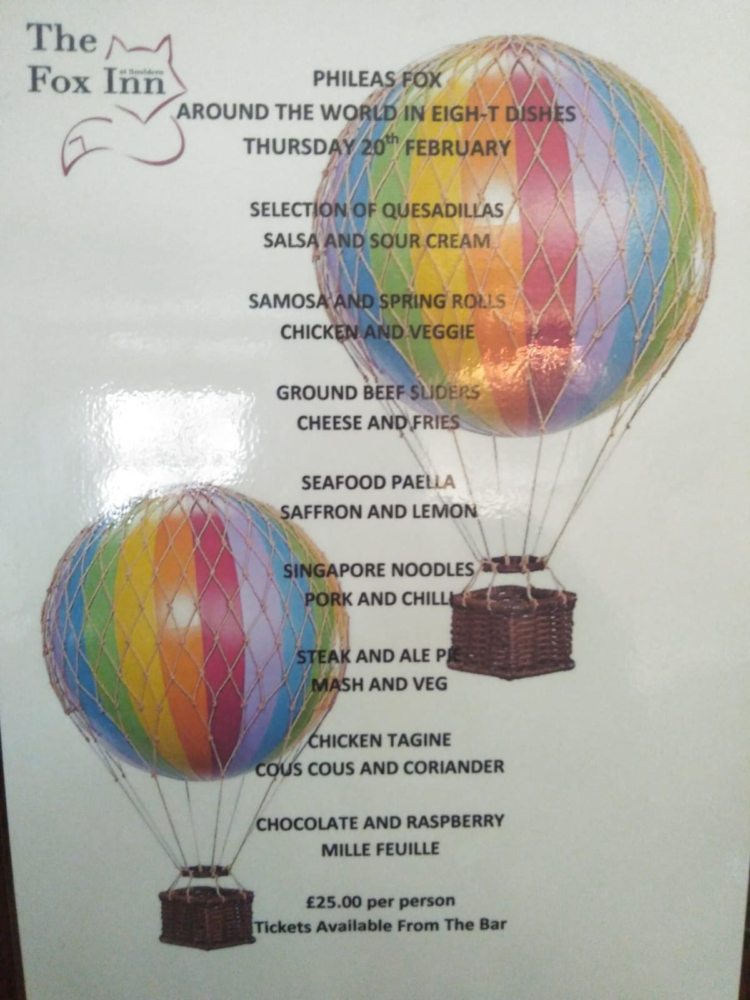
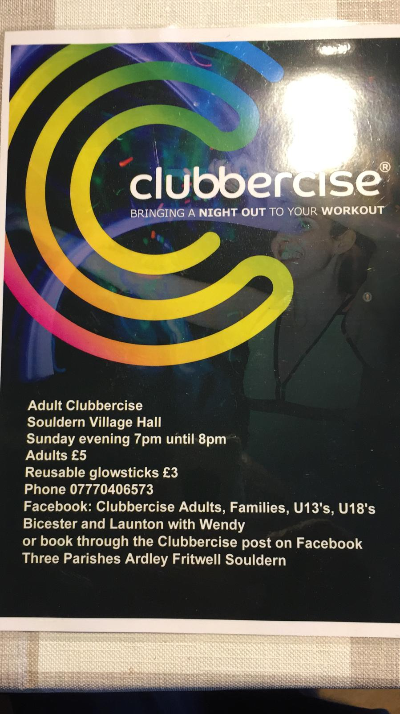
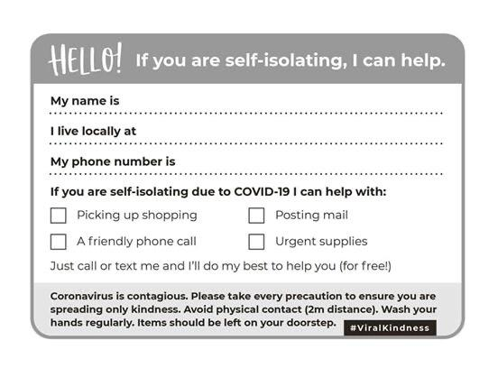
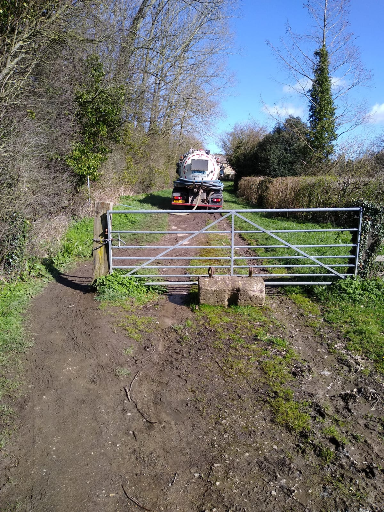
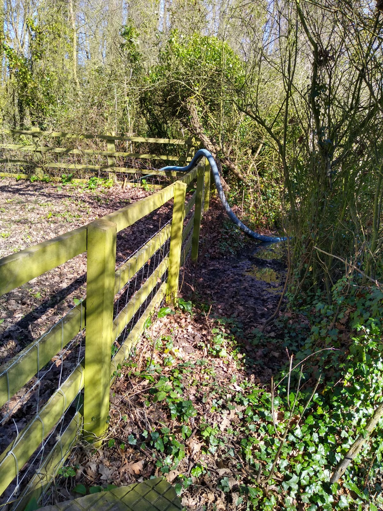
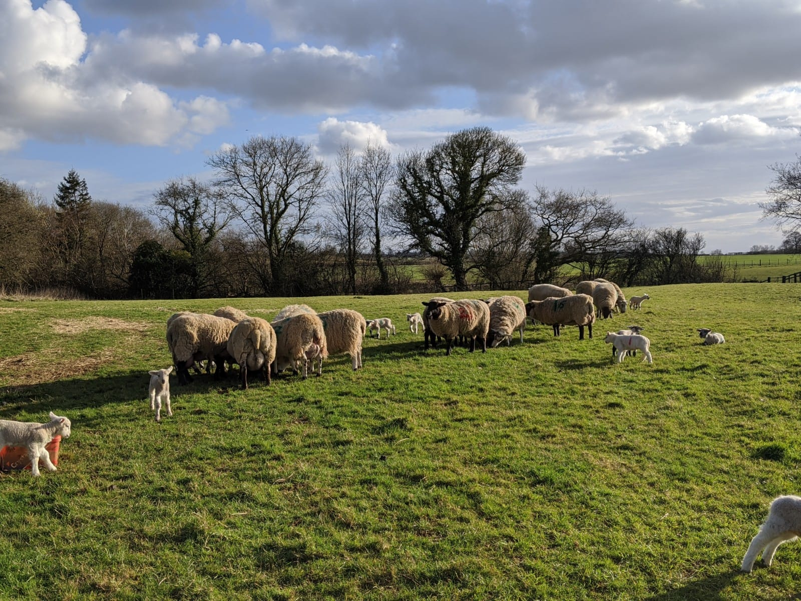
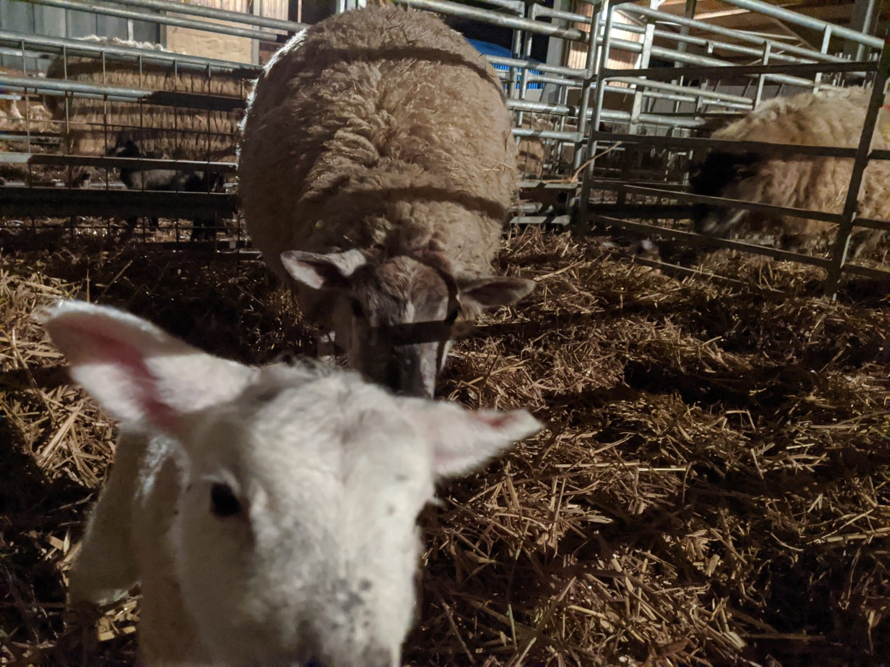
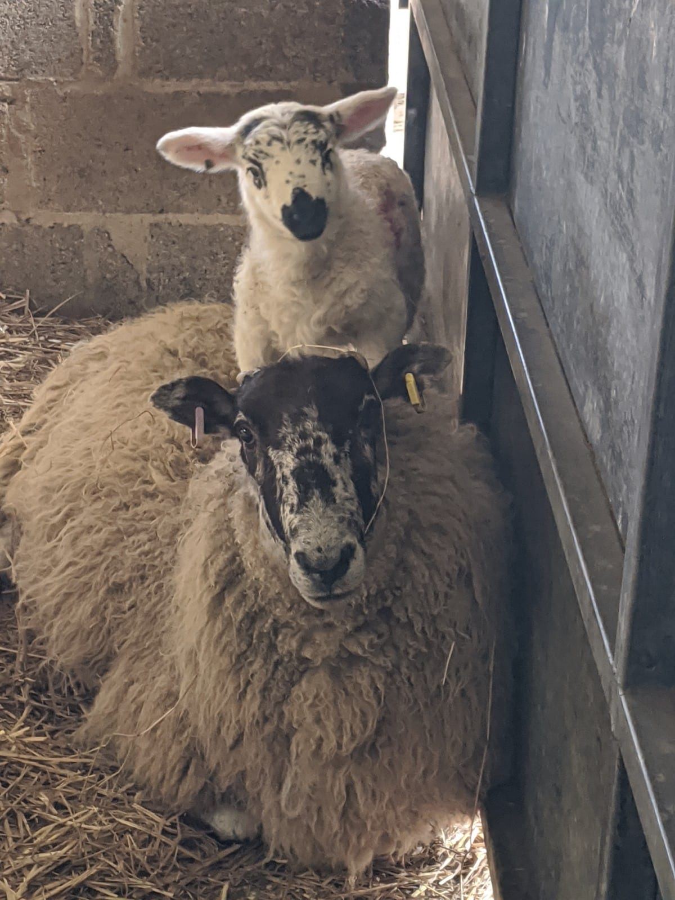
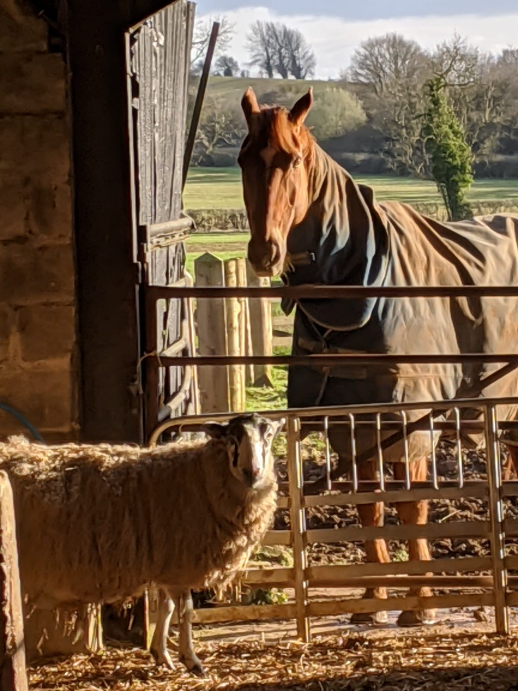

SSSC WhatsApp Chat Log
- 17/12/2019, 13:25 - Jon
-
😂😂😂😂
- 18/12/2019, 09:08 - Susan Jones
-
👍👏🏻
- 19/12/2019, 01:00 - Barbara
-
<Media omitted>
- 20/12/2019, 08:51 - David
-
Hi, just wondering if anyone knows somebody in the Village who's up for a bit of occasional hourly paid labouring ? Bit of experience in building trade would be helpful but not necessary.
Might be good idea to have a local community 'trust a trader' list for any skills that people can help with occasionally from gardening to computer help or just being able to give a lift to Banbury or Bicester for instance....
David
- 20/12/2019, 08:57 - Joe
-
Hi all.
Mike Paxton from fringford works for us on the farm part time and is very handy. Has his own tools and can turn his hands to most things. Also has a tractor, trailer etc for bigger jobs. ⟨phone⟩
Cheers
Joe
- 20/12/2019, 09:03 - Tania Noble
-
Thanks Joe - good to know
- 20/12/2019, 09:13 - David
-
Much appreciated Joe.
- 31/12/2019, 16:57 - Nick Oakhill
-
Happy new year to you all. Wishing everyone a healthy and happy 2020.
- 31/12/2019, 17:18 - Susan Jones
-
👍
- 31/12/2019, 17:19 - Barbara
-
🥂🥂
- 31/12/2019, 17:21 - Lyn Talbot
-
Happy New Year from the Talbots . ⛄⛄
- 31/12/2019, 17:50 - Joe
-
Happy New Year - Joe Abernethy 👨🌾🐑🐎
- 31/12/2019, 22:07 - Tania Noble
-
Happy New Year from the Nobles 🍾xxxx
- 31/12/2019, 22:19 - David Collett
-
Happy New Year, when it comes, from David & Helen!
- 31/12/2019, 22:50 - Jerry Stephenson
-
<Media omitted>
- 31/12/2019, 22:52 - Jerry Stephenson
-
Let the blokes open the fiz !!!!!
- 31/12/2019, 23:44 - Jon Shan
-
Happy New Year from the Shans
- 01/01/2020, 13:43 - Lucy Cornish
-
Wishing everyone a happy 2020, with best wishes from the Cornish Family x
- 06/01/2020, 14:43 - Nick Oakhill
-
Horticultural cheese and wine is being held on Friday 24th jan in VH. Tickets £10 from Carol Gray. More detail on noticeboard.
- 08/01/2020, 15:22 - Souldener
-
Green bins 🗑
- 08/01/2020, 15:23 - Jon Shan
-
Thanks Richard!
- 11/01/2020, 13:12 - Souldener
-
Two pot holes in Bates lane reported on fixmystreet.com. Very quick response and one has white lines already. Worth a try.
- 11/01/2020, 13:13 - Jon Shan
-
It works Richard
- 11/01/2020, 14:23 - Robert Large
-

- 15/01/2020, 18:04 - Souldener
-
Blues and browns
- 16/01/2020, 15:58 - Philip
-
Nutcracker has lost its blue box bottom after today’s collection.
If anyone finds it, could they please leave it outside the cottage. Thank you.
- 16/01/2020, 16:37 - Nick Oakhill
-
On a brighter note..... don’t forget the cheese and wine in VH on fri 24th jan!!!
- 16/01/2020, 16:43 - Nick Oakhill
-
Also, the Souldern solstice collective will be returning to the hill for Wacky races 3 on Saturday 27th June. All welcome to enter, with the evenings festivities being held at the Manor hangar. More information to follow ... when we’ve got ourselves organised🙈😀
- 17/01/2020, 15:39 - Paul Rasteiro
-
Hello from The Fox Inn, don't forget first come first served on Phileas Fox tickets (selling fast). Also January quiz night this Monday.
- 17/01/2020, 15:44 - Paul Rasteiro
-
Ps as I don't have everyone's numbers could you please sign off your messages 😁 Fox Inn 🦊
- 18/01/2020, 13:49 - Nick Oakhill
-
Paul, pls book Mrs O and I in for the Phileas Fox extravaganza. Nick
- 18/01/2020, 15:23 - Paul Rasteiro
-
Done 🦊
- 18/01/2020, 17:01 - Katy Draper
-
There are still a few tickets left for the Cheese and Wine, (Friday 24th, 7pm village hall, £10). If anyone would like a ticket please let me know. Thanks. Katy, The Brambles
- 18/01/2020, 21:53 - Robert Large
-
Evening Katie, Anne and I will take a couple of tickets. I'll pop round with the money tomorrow. Rob
- 19/01/2020, 07:25 - David Collett
-
Hello Paul, could you save 2 tickets for Phileas for Helen and me? We shall pop in tomorrow to pay for them. Many thanks,David
- 19/01/2020, 08:04 - Paul Rasteiro
-
Saved for you David 🦊
- 19/01/2020, 08:05 - David Collett
-
Thanks Paul!
- 20/01/2020, 17:01 - Lyn Talbot
-
Hi Paul. Please could you save two tickets for Jenni and Lyn for Phileas Fox. Thank you
- 20/01/2020, 17:02 - Paul Rasteiro
-
Will do 🦊
- 24/01/2020, 12:30 - Paul Rasteiro
-
Hi guys The Fox here, could those who've asked for Phileas Fox tickets please pop in for them to keep us up to date. Cheers 🦊
- 25/01/2020, 10:17 - Barbara
-
FAMILY CHURCH this Sunday. 10.30 in the church. Activities for the children, coffee and a chat for the adults. Followed by a short service for all at 11. All welcome
- 25/01/2020, 10:27 - Lyn Talbot
-
Quick thank you to Carol and her team for a lovely evening last night. From Jenny and Lynn
- 25/01/2020, 21:21 - Carol Gray
-
Thank you so pleased you enjoyed the evening
- 28/01/2020, 22:32 - Susan Roberts
-
Hi Nick. Please could you add Emily Johnson and Sarah Deeley to the group? I will send their numbers now. Thank you!
- 28/01/2020, 22:32 - Susan Roberts
-
⟨Sarah Deeley⟩
- 28/01/2020, 22:33 - Susan Roberts
-
⟨Emily Souldern⟩
- 30/01/2020, 14:01 - Paul Rasteiro
-
Afternoon Nick, could you please add Lou and Steve to the group 😁 details below 🦊
- 30/01/2020, 14:01 - Paul Rasteiro
-
Lou And Steve
⟨phone⟩
- 30/01/2020, 14:03 - Paul Rasteiro
-
Don't forget Everyone £10 Fish and Chip supper tonight!!! 🦊
- 01/02/2020, 15:17 - Barbara
-
Sunday School this Sunday. 10.30 in the Chapel.
- 01/02/2020, 22:12 - Rebecca
-
@447845594099 please could you add my brother - Toby
- 01/02/2020, 22:13 - Rebecca
-
⟨Toby Sneyd-G⟩
- 02/02/2020, 16:54 - Susan Jones
-
Are people having problems this weekend with Gigaclear??
- 02/02/2020, 16:56 - Amanda Sharman
-
This message was deleted
- 02/02/2020, 16:57 - Amanda Sharman
-
Yes we are not working currently
- 02/02/2020, 16:57 - David Carlisle
-
Seems ok here and their status page says all operational
- 02/02/2020, 16:58 - Alan
-
We are okay as well
- 02/02/2020, 18:15 - Susan Jones
-
Phoned Gigaclear and reported fault. Instructed to do factory reset of router, now working. 🤞 Call me Amanda if you want the instructions.
- 04/02/2020, 09:03 - Nick Oakhill
-

For all those looking for a workout on a Sunday evening😀
- 06/02/2020, 12:10 - Paul Rasteiro
-
- 06/02/2020, 12:10 - Paul Rasteiro
-
Breaking news! Every Thursday in February The Fox Inn Burger is only £10.00💥WOW I hear you say. That's right same 9oz patie, same great taste ONLY £10 🦊
- 06/02/2020, 14:55 - David Collett
-
Workout or burger?? 🤔
- 06/02/2020, 15:07 - Paul Rasteiro
-
🤣🤣
- 12/02/2020, 06:33 - Mark Foster
-
Big bright moon on the high Street last night
- 12/02/2020, 11:02 - Paul Rasteiro
-
Natural street lighting 😁🦊
- 13/02/2020, 13:50 - Paul Rasteiro
-
Hello everyone 👐 due to a medical thingy ma jigi! We have 2 tickets someone would like to sell for next weeks sold out Phileas Fox night. Please contact me if you'd like them 🦊
- 13/02/2020, 15:41 - Paul Rasteiro
-
Me again, the tickets have now been sold 😥🦊
- 19/02/2020, 19:27 - Barbara
-
Don’t miss out get your tickets from Kim, Barbara’s or any PCC member
- 21/02/2020, 13:38 - David Collett
-
There are two men in Fritwell “selling” loft insulation. One is wearing sunglasses currently - very pushy in trying to enter properties to inspect lifts. Call the police if you encounter these characters. Possibly linked to burglaries in Ardley yesterday.
- 21/02/2020, 13:40 - Rebecca
-
Thanks David.
I’ve just posted the same message in the Souldern Alerts group, seems they are doing the rounds and using it as an opportunity to find vacant properties.
Crime number is URN 453 if needed
- 21/02/2020, 13:42 - David Collett
-
Thanks Rebecca - didn’t even know there was a Souldern alerts group! Is it possible someone could put me on it? Many thanks...
- 21/02/2020, 13:43 - Rebecca
-
I will add you no problem
- 21/02/2020, 13:43 - David Collett
-
👍🏻🙂
- 21/02/2020, 13:49 - David Carlisle
-
Barbara if you send me the poster I'd be happy to post it to the website. (Same true if anyone else has announcements that can be public not just this WhatsApp group: email me or website@souldern.org )
- 21/02/2020, 13:56 - Rebecca
-
Hello all
Friends of Fritwell School are looking ahead to the (hopefully) nicer weather and planning their big summer event. We are looking for local businesses to sponsor elements of the event in return for advertising in the local community and at the event. It’s a high attendance event and we have many avenues for advertising and a variety of packages available.
If anyone would be interested in being involved or could put me in touch with someone I would be very grateful.
My email - kyterebecca@gmail.com
Thanks in advance!
- 21/02/2020, 19:05 - Nick Oakhill
-
Thanks for the Phileas Fox feast last night team Fox inn!! Great fun and very tasty food🌮🍔🇸🇬
- 21/02/2020, 19:57 - Paul Rasteiro
-
No thanks to All of you that came and made it a wonderful evening 💥😋🦊
- 21/02/2020, 19:57 - Paul Rasteiro
-
- 21/02/2020, 19:59 - Barbara
-
Great food great company - perfect evening. Thank you all
- 25/02/2020, 11:16 - Lucy Cornish
-
playground_questionnaire_final.pdf (file attached)
playground_questionnaire_final
- 25/02/2020, 11:16 - Lucy Cornish
-
Reminder that there is a meeting to discuss rejuvenating Souldern Playground on Thurs 5th March, 8pm, in Souldern Village Hall. Thank you for all the helpful questionnaires returned - the more, the better, and will be collecting from red post box at playground until this Sunday evening. Have attached a copy with this message in case you did not get one with The Three Parishes. Please do feel free to forward to any villagers not in this group.
- 25/02/2020, 11:20 - Lucy Cornish
-
This message was deleted
- 25/02/2020, 14:36 - Susan Jones
-
Is it worth sharing on the 3 parishes FB page too?
- 25/02/2020, 16:21 - Lucy Cornish
-
Good idea thanks Susan
- 25/02/2020, 22:31 - David Carlisle
-
Playground meeting and church curry night posted to https://www.souldern.org#announcements
- 28/02/2020, 13:07 - Rebecca
-
Tonight is the Fritwell School Quiz, due to illness we have two spaces available at the last minute.
If anyone would be interested pop me a message. Tickets are £10 a head which includes a Ploughmans supper. There is a cash bar, prizes for the winning team as well as a raffle.
Start time is 7:30pm. Thanks!
- 04/03/2020, 19:21 - Lucy Cornish
-
Final reminder for open playground meeting tomorrow evening at 8pm, Souldern Village Hall. Please do come if you can. Thank you, Lucy.
- 05/03/2020, 16:57 - Paul Rasteiro
-
Hello Everyone, to celebrate British Pie Week we'll be running these pies Thursday, Friday and Saturday. Book to avoid disappointment and I'll see you this weekend. 🥧😋🦊
- 06/03/2020, 07:29 - Rebecca
-
Tickets available through me or at Wrightons!
- 11/03/2020, 18:39 - Joe
-
- 11/03/2020, 18:40 - Joe
-
A photo of the viaduct taken by the lambing worked today.
- 11/03/2020, 18:42 - Linda Maw
-
What a super photo!
- 11/03/2020, 18:44 - Paul Rasteiro
-
Stunning
- 11/03/2020, 18:53 - Sam Alen
-
👍 awesome photo
- 11/03/2020, 20:46 - David Carlisle
-
can I put the photo on shouldern.org?
- 11/03/2020, 20:52 - Joe
-
Yes no problem
- 11/03/2020, 21:05 - David Carlisle
-
done thanks 🙂 souldern.org
- 11/03/2020, 21:09 - Mark Foster
-
I need to look into the history of that, serious bit of engineering there!
- 11/03/2020, 21:20 - Joe
-
Victorian apparently - I believe it's on some sort of historical features register.... Probably built by hand significantly quicker and cheaper than HS2!
- 13/03/2020, 07:09 - Lucy Cornish
-
In case you’ve not seen advice to stay at home and self isolate if you have a persistant cough or fever. Also applies to children. Happy to fetch supplies or offer any other help.
https://www.gov.uk/government/publications/covid-19-stay-at-home-guidance/stay-at-home-guidance-for-people-with-confirmed-or-possible-coronavirus-covid-19-infection
- 13/03/2020, 07:35 - Nick Oakhill
-
David C, pls can you add this to the village website. Thx
- 13/03/2020, 08:06 - Jon Shan
-
We are also happy to help with supplying anyone who needs to self isolate
- 13/03/2020, 08:07 - Michele Hendrick
-
We are happy to help too.
- 13/03/2020, 08:16 - Rebecca
-
Same here!
- 13/03/2020, 08:23 - Tania Noble
-
We are also happy to help. X
- 13/03/2020, 10:17 - David Carlisle
-
l posted an announcement and a fixed link on the home page of https://souldern.org if anyone wants any specific texts adding let me know.
- 13/03/2020, 11:04 - Joanna Carlisle
-
Hi, for anyone who is not aware, there is a milkman delivering to Souldern three times a week, Tuesday, Thursday and Saturday. He not only delivers milk but you can order a whole range of groceries including bread, cheese, eggs, juice, fruit and veg, vegan, dairy free, household and garden items. Set up an account online and you can order online or on their app up until 9pm the night before for delivery by 7am. Delivery is free. Go to milkandmore.co.uk
Hope this is of help to some people.
Joanna Carlisle
- 13/03/2020, 11:11 - Linda Maw
-
Ooh! I knew there was a milkman but hadn’t realised there was such a large variety of produce available. Many thanks for the info. Very useful 😊
- 13/03/2020, 11:47 - Philip
-
Very useful, thank you.
- 13/03/2020, 11:55 - Barbara
-
Just in case anyone who had bought tickets isn’t aware, the Curry and Quiz night planned for tomorrow night has been cancelled for the obvious reasons.
Also, the current guidelines relating to church services are on the chuch notice board and I will send them to David to put on the website.
- 14/03/2020, 14:23 - Susan Jones
-
Completely support the move to postpone the Church curry and quiz (unfortunately). Anyone with cancelled plans up for meal at the Fox tonight instead??
- 14/03/2020, 14:30 - David Collett
-
This message was deleted
- 15/03/2020, 13:22 - Souldener
-
Anyone near Bicester rugby Chesterton with a tractor/hefty 4wd, need help getting away from rugby parking. Help
- 15/03/2020, 13:26 - Joe
-
Sorry mate flat out lambing here! Our lambing worker is German and has decided to go home to support their family during the crisis. If anyone knows of anyone that would be keen on some lambing work for the next few weeks then let me know! Accomodation is available if required.
- 15/03/2020, 14:02 - Nick Oakhill
-
Good afternoon all, As the COVID 19 situation is moving very swiftly, as a community we need to pull together and offer assistance where it is needed in the village, particularly to those who are most vulnerable. Can we all take the time to think of any of our neighbours who might fall into this category. Then visit them, if you are willing, or alternatively let us know as there are many in this group who have offered assistance. Let’s identify the areas where help maybe needed and then we can galvanise the troops as required.
Regards
Nick
- 15/03/2020, 14:06 - David Collett
-
I am here most of this week and happy to help where necessary...
- 15/03/2020, 14:08 - Paul Rasteiro
-
If we at the pub can help with anything please ask. Including delivered meals if wanted. 🦊
- 15/03/2020, 14:08 - Mike Ovenu
-
I am in and out of the village all week (Mike OVENU ) happy to pick up shopping etc to help
- 15/03/2020, 14:23 - Mike Ovenu
-
Hello Nick please add Katie Gambrill to the group ⟨phone⟩, thanks Mike
- 15/03/2020, 14:25 - Linda Maw
-
Could James Maw also be added pls ⟨phone⟩
- 15/03/2020, 14:26 - Barbara
-
Count me in to help too wherever needed. Barbara
- 15/03/2020, 15:04 - Katy Draper
-
And me, Katy D
- 15/03/2020, 15:09 - Carol Gray
-
Happy to help anyone
- 15/03/2020, 15:09 - Philip
-

This looks useful....
- 15/03/2020, 15:23 - Nikki Robertson
-
I’m also here in the village to help,if you have any medical questions.
- 15/03/2020, 15:25 - Robert Large
-
Anne and I instructed to work from home until further notice so around to assist as and when.
- 15/03/2020, 15:32 - Rebecca
-
We will both be around and happy to help
- 15/03/2020, 15:34 - Linda Maw
-
I’m also around and happy to help.
- 15/03/2020, 15:35 - Jon Shan
-
Shan x 3 at the moment. All ready to help
- 15/03/2020, 15:39 - Sarah
-
We’re all around and in and out the village so more than happy to help
- 15/03/2020, 15:41 - Emily John-olls
-
Us too
- 15/03/2020, 15:43 - Melissa
-
Hi Nick, thanks for adding me to the group, could you please add Ian Spridgeon ⟨phone⟩ too? ...and obviously we are more than happy to help!
- 15/03/2020, 15:43 - Susan Roberts
-
We’re both happy to help too
- 15/03/2020, 15:44 - Sally Evens
-
Neil and Sally still working at mo! Although patients are not permitted to attend Brackley or Summertown clinic if they have any symptoms. May find we're at home soon. I'm covering care for all the over 80's in Cartwright Gardens Aynho. 😁👍🏼
- 15/03/2020, 15:58 - Mark Foster
-
Ditto I am available to help
- 15/03/2020, 16:54 - Amanda Sharman
-
I am also ...
- 15/03/2020, 17:27 - Lucy Cornish
-
Can offer help when not busy doctoring in the hospital. Around in village on tues, wed and weekends for now. Lucy
- 15/03/2020, 17:29 - Anna
-
Me too - I’m around
- 15/03/2020, 17:57 - Nick Oakhill
-
Thanks very much for all the kind offers that have come forward. Let’s make sure we are making every effort to identify those that are most “at risk”, then the volunteers can be mobilised.
- 15/03/2020, 18:07 - David Collett
-
Absolutely Nick, great idea. Can we somehow make a database of those “vulnerable” in the village?
- 15/03/2020, 18:11 - Nick Oakhill
-
Just awaiting a copy of the electoral roll to use as a starting point. For obvious reasons we need to be sensitive to the fact that some will not wish to be seen as vulnerable!! So have to be careful to handle with tact( not a strength of mine).
- 15/03/2020, 18:12 - David Carlisle
-
it seems quite likely according to BBC that everyone over 70 will be asked to self isolate so the definition of those that are "vulnerable" may need to be simply that: a list of households with over 70s
- 15/03/2020, 18:13 - Nick Oakhill
-
Very good point
- 15/03/2020, 18:18 - David Collett
-
As you say Nick, tact required...
- 15/03/2020, 18:53 - Lyn Talbot
-
Hey Nick. You’re absolutely right about some of us not wanting to be thought I
Of asvulnerable but we do understand we are over 70 and thank everybody who has offered to help.
- 15/03/2020, 19:13 - Emily Pheasant
-
Pheasants around and happy to help in any way x
- 16/03/2020, 08:14 - Carol Gray
-
Carol & Alan Gray available to assist anyone
- 16/03/2020, 12:50 - Mark Foster
-

Is this ok?!
- 16/03/2020, 12:56 - Mark Foster
-

- 16/03/2020, 12:57 - John
-
It will be emptying septic tank in the manor
- 16/03/2020, 12:58 - Mark Foster
-
Just found the guy all seems legit 😁
- 16/03/2020, 12:59 - Rebecca
-
As there are some new members in this group you may not know that there is also a 'Souldern Village Alerts' group. It is used for any security notices/general alerts about Souldern or surrounding areas. If you would like to be added please let me know
- 16/03/2020, 13:00 - Katy Draper
-
Hi Rebecca, can you add me please? Thanks Katy
- 16/03/2020, 13:00 - Joanna Carlisle
-
Yes please.
Joanna Carlisle
- 16/03/2020, 13:00 - Rebecca
-
👍
- 16/03/2020, 13:00 - Rebecca
-
👍
- 16/03/2020, 13:06 - John
-
Please add me thanks John Hoodless
- 16/03/2020, 13:11 - Barbara
-
Yes please Rebecca. Thanks Barbara
- 16/03/2020, 13:12 - Linda Maw
-
Could you also please add Victoria Sargent (Bates Lane)
⟨phone⟩
- 16/03/2020, 13:19 - Joe
-
Yeah it's fair enough from my point of view ... Hope he didn't make a mess of the parish allotment verge area though 😱😱😱
- 16/03/2020, 13:25 - Joe
-

To lighten the mood 👍
- 16/03/2020, 13:25 - Joe
-

- 16/03/2020, 13:25 - Joe
-

- 16/03/2020, 13:25 - Joe
-

- 16/03/2020, 13:25 - Katy Draper
-
Thanks Joe😁😁
- 16/03/2020, 13:26 - Lucy Cornish
-
Lovely thanks Joe
- 16/03/2020, 13:26 - Susan Roberts
-
Gorgeous photos! 😍
- 16/03/2020, 13:27 - Suzanne Rayner
-
Lovely pictures!
- 16/03/2020, 14:03 - Tania Noble
-
Rebecca please add me to village alerts group. Thanks, Tania
- 16/03/2020, 14:51 - David
-
Yes please add me to alerts group Rebecca, David B
- 16/03/2020, 14:52 - Terri
-
Please add me to the alerts group please Thanks Terri
- 16/03/2020, 15:18 - James
-
Me too, thx JM
- 16/03/2020, 16:37 - Jon Shan
-
That’s has lightened the mood Joe. That and the sunshine. Thanks
- 16/03/2020, 16:42 - Matthew Carlisle
-
Can you add me please
- 16/03/2020, 16:44 - Sally Evens
-
Are we open to humorous pics on this group?
- 16/03/2020, 17:30 - John
-
Nick please add Sue
Mobile is: ⟨phone⟩.
- 16/03/2020, 17:31 - Jon Shan
-
Just keep it clean Sally
- 16/03/2020, 17:36 - Joe
-
Well that's no fun is it
- 16/03/2020, 17:47 - Nick Oakhill
-
Sally, Your next door neighbour has already set the precedent on humour...... albeit at a pretty low level 😀🙈
- 16/03/2020, 18:13 - Sally Evens
-
UK Virus ALERT
The English are feeling the pinch in relation to recent virus threat and have therefore raised their threat level from “Miffed” to “Peeved.” Soon, though, level may be raised yet again to “Irritated” or even “A Bit Cross.”
The English have not been “A Bit Cross” since the blitz in 1940 when tea supplies nearly ran out.
The virus has been re-categorized from “Tiresome” to “A Bloody Nuisance.” The last time the British issued a “Bloody Nuisance” warning level was in 1588, when threatened by the Spanish Armada.
The Scots have raised their threat level from “Pissed Off” to “Let's Get the Bastard.” They don't have any other levels. This is the reason they have been used on the front line of the British army for the last 300 years.
The French government announced yesterday that it has raised its alert level from “Run” to “Hide.” The only two higher levels in France are “Collaborate” and “Surrender.” The rise was precipitated by a recent fire that destroyed France's white flag factory, effectively paralyzing the country's military capability.
Italy has increased the alert level from “Shout Loudly and Excitedly” to “Elaborate Military Posturing.” Two more levels remain: “Ineffective Combat Operations” and “Change Sides.”
The Germans have increased their alert state from “Disdainful Arrogance” to “Dress in Uniform and Sing Marching Songs.” They also have two higher levels: “Invade a Neighbour” and “Lose.”
Belgians, on the other hand, are all on holiday as usual; the only threat they are worried about is NATO pulling out of Brussels.
The Spanish are all excited to see their new submarines ready to deploy. These beautifully designed subs have glass bottoms so the new Spanish navy can get a really good look at the old Spanish navy.
Australia, meanwhile, has raised its alert level from “No worries” to “She'll be alright, Mate.” Two more escalation levels remain: “Crikey! I think we'll need to cancel the barbie this weekend!” and “The barbie is cancelled.” So far, no situation has ever warranted use of the final escalation level.
The Russians have said “Its not us”
- 16/03/2020, 18:13 - Sally Evens
-
Back on!
- 16/03/2020, 18:14 - Sally Evens
-
- 16/03/2020, 18:14 - Sally Evens
-
Neil on the way to Reading from Heyford!
- 16/03/2020, 18:21 - Joe
-
- 16/03/2020, 18:51 - Sally Evens
-
🤪
- 16/03/2020, 18:53 - Wendy Cooper
-
🤣!!
- 16/03/2020, 18:58 - James
-
Given the latest Government advice I. Terms of social gathering, maybe The Fox would consider doing take away’s (food and beer?) in order to keep an income stream ? Wouldn’t like the fox to become extinct😞
- 16/03/2020, 18:59 - Kimberly
-
Would definitely order a Friday night takeaway!
- 16/03/2020, 18:59 - Suzanne Rayner
-
That sounds like a great idea....i would definitely order ...wine too!
- 16/03/2020, 19:00 - James
-
Pizza night once or twice a week? Fish n chips?
- 16/03/2020, 19:05 - Nick Oakhill
-
The fox inn are members of this group and have already offered to do home deliveries. I’m sure Paul will take orders when he picks this up.
- 16/03/2020, 19:05 - Susan Jones
-
Pies and mash please!!!
- 16/03/2020, 19:06 - Paul Rasteiro
-
We are more than happy and keen to offer a take away service (and delivery for those who need it). Just give us a call on ⟨phone⟩. Foxaroo at your service! 😋🦊
- 16/03/2020, 19:07 - Paul Rasteiro
-
Thanks Nick. 👍
- 16/03/2020, 19:08 - Susan Roberts
-
Hi Paul! Will it be anything on the normal menu? Could you post it here so we have it on hand? Agree with James that pizza would be a godsend if possible!
- 16/03/2020, 19:13 - Paul Rasteiro
-
Hope this is clear enough, I'll also make point of trying to inform you all of the daily specials. 🦊
- 16/03/2020, 19:13 - Toby Sneyd Garrity
-
If only xenophobia was a cure for coronavirus...
- 16/03/2020, 19:13 - Rebecca
-
This is great news, I will pass on to Richard’s parents also. Thanks Paul!
- 16/03/2020, 20:34 - David Collett
-
Nick, would be kind enough to add Helen? ⟨phone⟩.
- 16/03/2020, 21:12 - David Collett
-
Many thanks Nick.
- 16/03/2020, 21:35 - Sally Evens
-
- 16/03/2020, 21:35 - Sally Evens
-
👍😁
- 16/03/2020, 21:44 - James
-
Under the new Government guidelines he will be quarantined with her for 14 days, no more celebrations for him, no visits to the pub to see his mates or even going to work for a break😬
- 16/03/2020, 21:46 - David Collett
-
😱
- 17/03/2020, 08:20 - Rebecca
-
I am going to Bicester to the supermarket today, if anyone needs anything or knows of a neighbour who needs help do let me know
- 17/03/2020, 09:13 - James
-
Thame is grid locked due to the traffic queing to get into the Waitrose car park, madness!
- 17/03/2020, 09:17 - David Collett
-
They are all too late anyway - all the loo paper went ages ago!
- 17/03/2020, 09:21 - Sally Evens
-
- 17/03/2020, 09:25 - David Collett
-
😁
- 17/03/2020, 11:10 - Sally Evens
-
Stores closed at Bicester Village and 'staff resign' | Oxford Mail
https://www.oxfordmail.co.uk/news/18308236.stores-closed-bicester-village/
- 17/03/2020, 11:15 - Sally Evens
-
Losing business is not going to help anyone. Stress and Depression will hit harder than the virus if people don't think rationally. People are worried about a virus that we've probably had around since before Christmas, some of us have possibly already had it. Just isolate if you're ill and stay away from elderly relatives until clear. ♥️🙏
- 17/03/2020, 11:48 - Lucy Cornish
-
Sad to hear about businesses going under and agree important not to panic. Here’s a summary of PHE guidance.
- If you have persistant cough or fever self isolate for 7 days.
- Whole household self isolate for 14 days from the day the first person had symptoms if anyone in family has persistant cough or fever
- If in your household you have person >70 years, someone with long term condition, pregnant or immunocompromised person try to find somewhere else for them to stay.
- Various sensible social distancing measures based on experience in Italy and most recent robust modelling. Up to 50,000 cases in UK. That’s only 0.08% population so far. Hospitals already busy, so important to follow advice for the good of all.
I’ve attached social distancing measures and information about those considered high risk. Hope you all stay well. Dr Lucy x
https://www.gov.uk/government/publications/covid-19-guidance-on-social-distancing-and-for-vulnerable-people/guidance-on-social-distancing-for-everyone-in-the-uk-and-protecting-older-people-and-vulnerable-adults
- 17/03/2020, 12:07 - Sally Evens
-
👍🏼
- 17/03/2020, 12:12 - Nick Oakhill
-
Thanks for this Lucy. A note is being delivered to every household in the village before the weekend offering assistance to anybody that needs it and giving contact details of six parishioners who will act as conduits for people to get access to the support network if they are not part of this group. Nick
- 17/03/2020, 12:52 - Martin Garrity
-
If any villagers are self isolating and need their dog walking I can help with that
- 17/03/2020, 12:52 - Rebecca
-
👍
- 17/03/2020, 13:11 - Sally Evens
-
https://www.facebook.com/1⟨phone⟩707/posts/1⟨phone⟩5421/?sfnsn=scwspwa&extid=8GbvB3FpNmUkZFCK
- 17/03/2020, 13:57 - Emily John-olls
-
FYI
(As I received)
Dr.. Hussam Hijazi: "The latest information from the University of Vienna, Research Department, today March 14, 2020: Please tell all people who have symptoms or fear of corona when they get headache, severe headache, throat infections coughing or heat occurs. Do not take Ibuprofen because it has been discovered that it increases speed The reproduction of the coronavirus covid-19 in the body and this is the reason why people in Italy have reached the current bad stage and rapid spread - the best in this case paracetamol or aspirin - please distribute the message to all those you know to save them from this disease/crisis.
At the university hospital in Toulouse, France, there are four very critical cases of coronavirus in people of young age 18 / 24 and 32 who do not have any health problem. Their problem is that when they all appeared to have symptoms, they all took painkillers like (... ibuprofen, voltaren, profenid) and other relievers containing cortisone.
As a precaution, you should avoid these medications for anyone who develops symptoms. You should always consult a doctor.
The French authorities began to spread this information widely.
- 17/03/2020, 14:23 - Rebecca
-
From Wrightons:
So, launching today in advance of the instructions for the elderly and vulnerable to self isolate for weeks, Wrightons in Fritwell are beginning an emergency supplies system for neighbours in the village to help those who cannot get out.
Please visit the Wrightons website to find the current order form. http://www.wrightons.co.uk
Please note, Wrightons are not delivering. They will prepare shopping orders to their best ability using available supplies on two days a week. Orders will be totalled, and calls made to collect payment via debit / credit card.
If you know someone who cannot, or will not leave the house, and needs help, then please introduce yourseslf and offer your support.
Please help each other in this time of need. Please try to make sure you help neighbours who you know personally.
- 17/03/2020, 15:02 - -
-
- 17/03/2020, 15:03 - -
-
Advice video.
- 17/03/2020, 18:24 - Paul Rasteiro
-
Hi guys as a few people have asked if we can also offer beer (draught) and wine with takeaways, the answer is............. YES we can 🍻 so please don't hesitate to contact us on ⟨phone⟩. 🦊
- 17/03/2020, 19:48 - Tania Noble
-
We just had the best fish & chips EVER, courtesy of the Fox! The beer went down a treat too. Thank you! It’s great to know we have this takeaway option for occasional treats! X
- 17/03/2020, 20:05 - Paul Rasteiro
-
Our pleasure Tanya and thank you too. 🦊
- 17/03/2020, 20:51 - Charles Noble
-
Yes, thanks Paul - was epic.
- 17/03/2020, 21:16 - Paul Rasteiro
-
Nick could you please add Wayne to the group ⟨phone⟩ please 🦊
- 18/03/2020, 07:15 - Nicholas Johnstone
-
Paul: please let me have brief details of Fox takeaway service and we can include in Three Parishes mag and social media. Nick J
- 18/03/2020, 09:30 - FieldyKJ
-
Nick - can you please add my father who is now a permanent Souldern resident ⟨phone⟩ thank you!
- 18/03/2020, 09:31 - Nick Oakhill
-
Shall I put his name as Kate’s father?? N😀
- 18/03/2020, 09:32 - FieldyKJ
-
😂 Jim Field
- 18/03/2020, 09:38 - Emily John-olls
-
Hi Paul, would you be able to do takeaway pizza as well?
- 18/03/2020, 09:42 - Paul Rasteiro
-
I am looking into pizzas Emily and will let everyone know if/when I can 👍🦊
- 18/03/2020, 09:42 - Emily John-olls
-
That’s amazing! Thank you 🤗
- 18/03/2020, 09:44 - Nikki Robertson
-
We have a pizza oven if you need.
- 18/03/2020, 09:46 - Susan Roberts
-
Nikki could be top villager through this crisis IMO!
- 18/03/2020, 09:49 - Joe
-
In my opinion a dominos would be a welcome addition to the village .. Nick - your annexe would be perfect! 🍕
- 18/03/2020, 09:51 - Nick Oakhill
-
....as long as the guests don’t mind🙈😀
- 18/03/2020, 09:52 - Robert Large
-
Nick, can you please add Anne ⟨phone⟩. Thanks
- 18/03/2020, 09:59 - Rebecca
-
Fritwell School have sadly had to cancel their Easter Egg hunt for this year... this will mean less contribution from the PTA to the school fund.
To try and re-coup some losses we are selling off the eggs we had purchased in preparation, if anyone would like to purchase any please send me a PM. I can deliver and leave on doorsteps if you are self isolating. They are £1 for a larger egg and 50p for small ones which should be a little cheaper than the shops are currently selling for. Thanks!
- 18/03/2020, 11:21 - Susan Jones
-
Happy to buy our eggs through you this year Rebecca, also happy to donate a bit more to help out. Real shame for you all as it's always a fun event. Susan x
- 18/03/2020, 11:22 - Rebecca
-
Thank you Susan that is really kind, such a shame for the school :(
I'll send you a PM so as not to clog up the group.
- 18/03/2020, 17:28 - Joe
-
What's on the specials board Paul?
- 18/03/2020, 17:55 - Paul Rasteiro
-
The top one is fishcakes 🦊